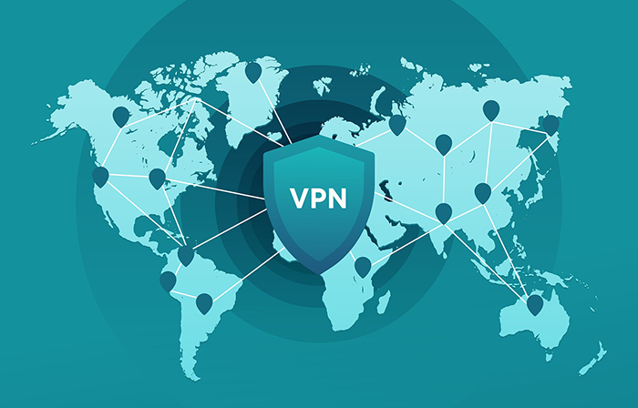
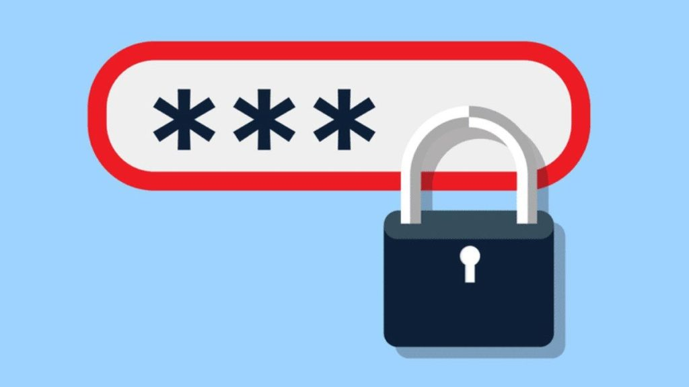
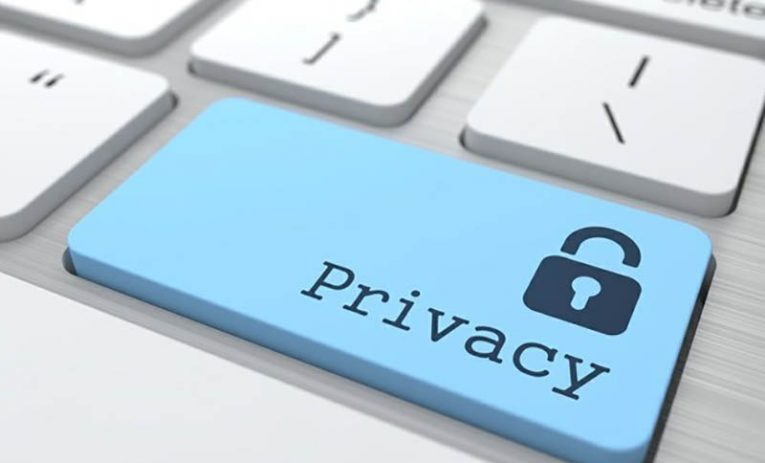

Online Safety
Using a VPN

Something that you can do in order to stay safe online is use a vpn! Vpns are good as it keeps your connection secure and protects your device from prying eyes. Public Wi-Fi is convenient but comes at the expense of security. When you’re answering emails at a local coffee shop or texting a friend, someone could be watching everything your doing. Additionally, it allows you to have privacy from the government
Using a Strong Password

Another important rule is to make sure your passwords are strong and not easy for people to guess. For example, it could be a nonsence pharse or something very personal you've never told anyone, including numbers, symbols and capital letters. The stronger your password, the more protected your computer will be from hackers and malicious software. You should maintain different strong passwords for all accounts on your computer.
Keep Personal Information Private

It's important to keep your information private at all times because you never know what could happen. To do this, When you sign up for something online, read the terms and conditions. Also, if you suspect your credit card information is being misused online, turn off your card using the SNB SD mobile banking app.
About